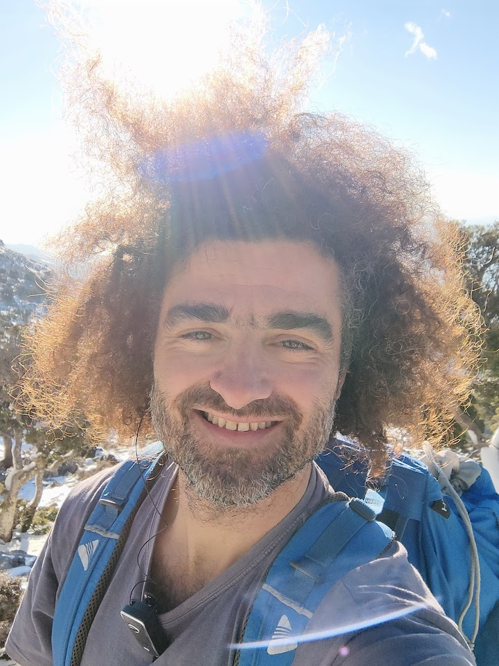

Keynote speakers
Simona Georgieva
- Associate Professor, Institute of Biodiversity and Ecosystem Research, Bulgarian Academy of Sciences
Simona is an evolutionary ecologist whose research focuses on revealing and explaining the origins and evolutionary radiation of parasitic worms – an extremely diverse, abundant and widespread group of organisms. Using various host-parasite systems, her research seeks to elucidate the ecological and evolutionary consequences associated with parasites' life cycles and to address broader ecological and evolutionary questions. She blends traditional and novel approaches to study the relationships between parasite transmission dynamics, host specificity, and environmental factors that drive adaptive divergence and evolutionary innovation.
Simona holds a Ph.D. in Parasitology from the University of South Bohemia (Czechia) and conducted postdoctoral research at the Institute of Parasitology, Czech Academy of Sciences, and at the Cavanilles Institute of Biodiversity and Evolutionary Biology, University of Valencia, Spain. Prior to her current position as an Associate Professor at the Bulgarian Academy of Sciences, she was an Outstanding Overseas Researcher of the National Research Foundation of Korea.

Pavlos Pavlidis
- Associate Professor for Bioinformatics, Department of Biology, University of Crete
- Institute of Computer Science in Foundation for Research and Technology – Hellas (FORTH-ICS)